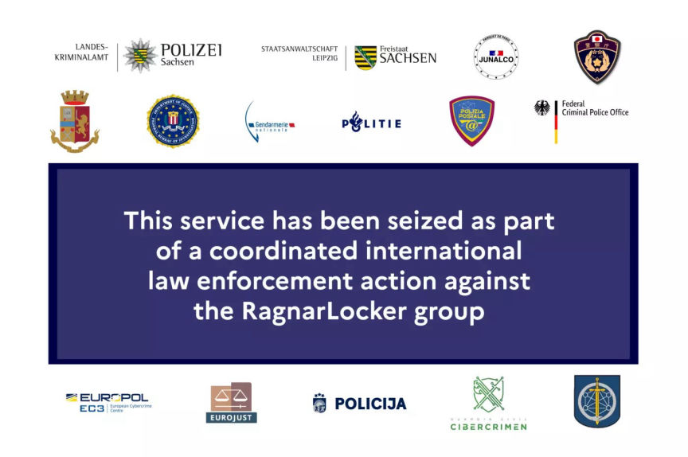
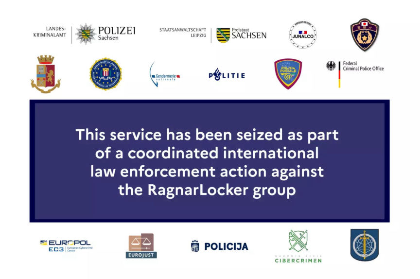

Ragnar Locker Ransomware Group Dismantled
~2 min read | Published on 2023-10-26, tagged Arrested, Ransomware using 261 words.
An international operation arrested one of the developers of the Ragnar Locker ransomware group and seized several of the group's servers.

The operation involved law enforcement authorities from 11 countries and was launched in May 2021 by the French National Gendarmerie and coordinated by Europol and Eurojust. The investigators reportedly focused on the identification and takedown of servers used by the ransomware group. The group is suspected of having carried out ransomware attacks against 168 companies worldwide since 2020.
The operation culminated in a week of action from October 16 to October 20. Searches were carried out at properties associated with the group in the Czech Republic, Spain, and Latvia. The actions resulted in the seizure of nine servers; five in the Netherlands, two in Germany, and two in Sweden.
The operation resulted in the apprehension and questioning of five suspects in the Czech Republic, Spain, and Latvia. The sixth and main suspect was arrested in Paris, on October 16, and his home in Czechia searched. He is suspected of being a developer of the Ragnar group. He was presented before the Paris Judicial Court.
The operation was the third of its kind conducted against the Ragnar Locker Group. The first operation took place in September 2021. It involved French, Ukrainian, and US authorities. It led to the arrest of two suspects in Ukraine. The investigators also seizied $1.3 million in cryptocurrencies and $375,000 in cash.
The second operation was conducted in October 2022, by French, Canadian, and US authorities. It resulted in the arrest of one suspect in Canada.

Seizure Banner on Ragnar Locker's site
The operation involved law enforcement authorities from 11 countries and was launched in May 2021 by the French National Gendarmerie and coordinated by Europol and Eurojust. The investigators reportedly focused on the identification and takedown of servers used by the ransomware group. The group is suspected of having carried out ransomware attacks against 168 companies worldwide since 2020.
The operation culminated in a week of action from October 16 to October 20. Searches were carried out at properties associated with the group in the Czech Republic, Spain, and Latvia. The actions resulted in the seizure of nine servers; five in the Netherlands, two in Germany, and two in Sweden.
The operation resulted in the apprehension and questioning of five suspects in the Czech Republic, Spain, and Latvia. The sixth and main suspect was arrested in Paris, on October 16, and his home in Czechia searched. He is suspected of being a developer of the Ragnar group. He was presented before the Paris Judicial Court.
The operation was the third of its kind conducted against the Ragnar Locker Group. The first operation took place in September 2021. It involved French, Ukrainian, and US authorities. It led to the arrest of two suspects in Ukraine. The investigators also seizied $1.3 million in cryptocurrencies and $375,000 in cash.
The second operation was conducted in October 2022, by French, Canadian, and US authorities. It resulted in the arrest of one suspect in Canada.